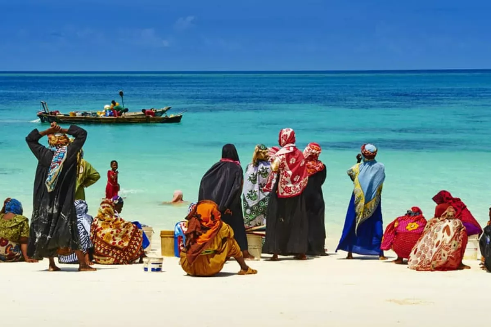
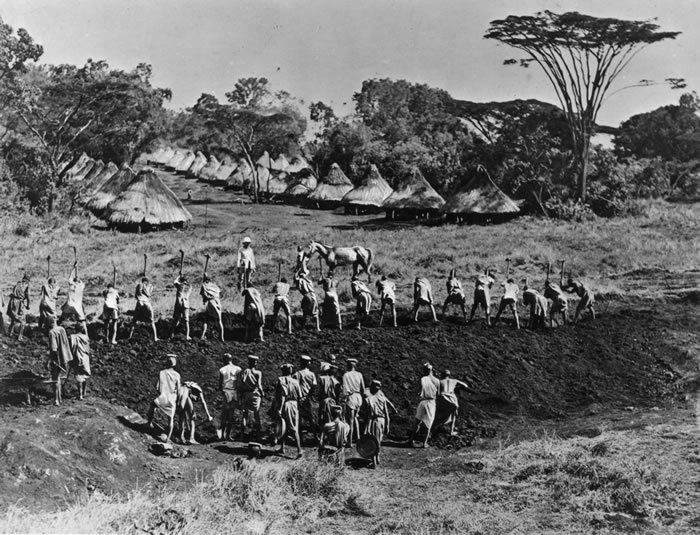
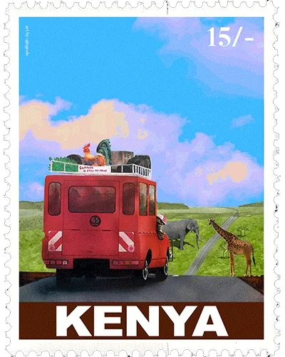

Evolving from a mixture of Bantu and Arabic, the Swahili language then developed as a lingua franca for trade between the different peoples. When the Portuguese arrived in 1498, the Arab dominance on the coast was clipped, as the Port of Mombasa became an important resupply stop for ships bound for the Far East. The Portuguese gave way in turn to Islamic control under the Imam of Oman in the 1600s until another European influence came along, this time from the United Kingdom during the 19th century.

The roots of the colonial history of Kenya go back to the Berlin Conference in 1885, when East Africa was first divided into territories of influence by the European powers. The British Government founded the East African Protectorate in 1895 and soon after, opened the fertile highlands to white settlers. Even before it was officially declared a British colony in 1920, these settlers were allowed a voice in government, while the Africans and the Asians were banned from direct political participation until 1944. During this period thousands of Indians were brought into Kenya to work on building the Kenya Uganda Railway Line and subsequently settled there, whilst inviting many of their kith and kin who were mainly traders from India to join them.

